Existem atualmente quatro afinidades básicas que qualquer um pode selecionar ao criar um personagem pela primeira vez, com mais três sendo desbloqueáveis em todo o mundo. (Observe que Ironsing, Shadowcast e Bloodrend, as 3 afinidades que você deve obter, permanecerão permanentemente desbloqueadas para todos os seus slots). No menu de criação de personagem, você pode escolher até duas afinidades para começar com ou nenhuma, de acordo com as preferências.
Quanto mais sintonizações você usar, mais caro será gerenciá-las – porque você não tem um número infinito de pontos para gastar em seu personagem. Escolha sabiamente.
Ao escolher não sintonizar, você receberá 10 pontos de investimento extras para compensar a perda de sintonização. Normalmente, esses 10 pontos seriam investidos automaticamente se você escolhesse uma iniciação.
Após a criação, o personagem é capaz de aprender mais afinidades ao longo de suas aventuras visitando treinadores de iniciação individuais ao redor do mundo. Para que o personagem possua mais afinidades após a criação de personagem, ele deve coletar 2 dos respectivos ingredientes elementares - exceto Ironsing, que utiliza um método de desbloqueio mais complicado.
Flamecharm = Brasas Moribundas
Frostdraw = Prismas Frígidos
Thundercall = Glândulas de Centelha
Galebreathe = Pedras do Vendaval
Shadowcast = Obsidiana Umbral
Ironsing = 1 de cada minério (incluindo uma relíquia)
Bloodrend = Estrelas do Coração
Cada um representa respectivamente a habilidade de controlar, fogo, gelo, eletricidade, vento, sombras, ferro e sangue.
Afinidades Básicas:
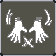
Sem-Afinidade
Mantras sem afinidades, ou mantras físicos, consistem em mantras escolhidos com base em seus atributos, semelhantes aos Talentos, e não em suas afinidades.
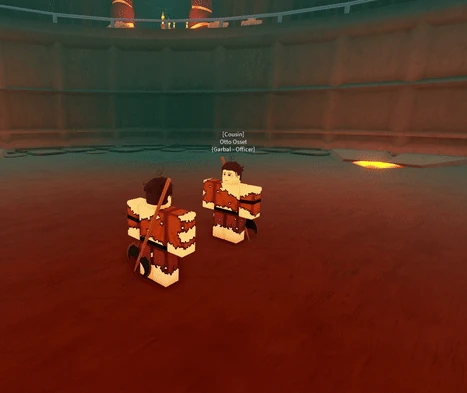
Flamecharm (FIR)
Flamecharm é uma afinidade que concede ao usuário a habilidade de criar combustão usando éter, dando-lhe acesso a habilidades que se concentram em efeitos DOT e AoE, ao mesmo tempo que fornece uma quantidade notável de utilidade.
Flamecharm pode ser treinado com uma combinação do treinamento com Hearthgem e usando mantras(feitiços) de fogo.
A sintonização pode ser desbloqueada usando uma poção Hearthblood obtida em Songseeker Wilds usando duas Brasas Moribundas, e pode atualizar feitiços por 100 notas cada. Cada atualização adquirida tornará a próxima atualização para o mesmo mantra 100 notas mais cara.
Atualizar um Flamecharm Mantra do nível 1 para o nível 2 custa 100 notas.
Atualizar um Flamecharm Mantra do nível 2 para o nível 3 custa 200 notas.
Atualizar um Flamecharm Mantra do nível 3 para o nível 4 custa 300 notas.
Atualizar um Flamecharm Mantra do nível 4 para o nível 5 custa 400 notas.
Isso se aplica a todos as outras afinidades.
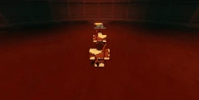
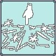
Frostdraw (ICE)
Frostdraw é uma afinidade que concede ao usuário a habilidade de trazer gelo e frio congelante, dando-lhe acesso a habilidades que se concentram em debuffs. Frostdraw é um pouco mais lento em comparação com outras sintonizações, mas ainda oferece opções ofensivas relativamente rápidas e astutas. Isso se traduz no fato de que a afinidade se adequaria bem a pessoas que têm uma abordagem defensiva no combate.
Acertar mantras de gelo aplica gélido, que desacelera os inimigos e pode ser melhorado com certos talentos. Adicionar Logstones a certos Mantras pode aumentar a duração do debuff.
Frostdraw pode ser treinado usando uma combinação de Hemafrost, mantras Frostdraw e prismas frígidos.
A sintonização pode ser desbloqueada usando uma Poção Glassblood obtida em Etris, dentro de uma cabana na periferia da cidade, usando dois Prismas Frígidos, e pode atualizar feitiços por 100 notas cada. Cada atualização adquirida tornará a próxima atualização para as mesmas notas do Mantra 100 mais cara.
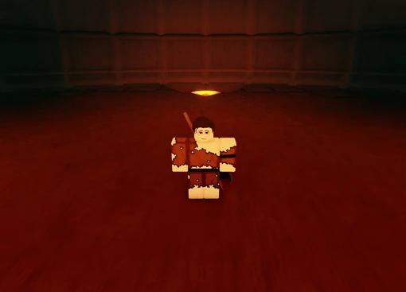
Thundercall (LTN)
Thundercall é uma sintonização que concede ao usuário a habilidade de controlar, conjurar e criar trovões e eletricidade, dando-lhes acesso a habilidades que se concentram em combate, atordoamento e movimento.
Thundercall faz uso de uma natureza altamente imprevisível devido à sua velocidade e alto potencial de lentidão/atordoamento.
Thundercall pode ser treinado usando uma combinação de Self-Conducting Loop e mantras de Thundercall.
A sintonização pode ser desbloqueada usando uma Poção Sparkblood obtida na Summer Isle, no segundo andar do castelo, usando duas Glândulas de Centelha, e pode atualizar feitiços por 100 notas cada. Cada atualização adquirida tornará a próxima atualização do mesmo Mantra 100 notas mais cara.
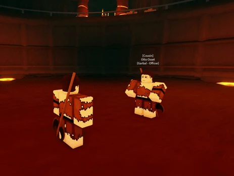
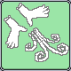
Galebreathe (WND)
Galebreathe é uma sintonização que concede ao usuário a habilidade de manipular, conjurar e controlar ventos, dando-lhes acesso a habilidades que se concentram em movimento, projéteis e grandes AoE. Além de possuir a capacidade de diminuir a velocidade de ataque ao atingir um oponente com um mantra de vendaval.
Galebreathe também possui Talentos atribuídos a ele, permitindo ao usuário expandir totalmente sua conexão com a atmosfera.
Galebreathe pode ser treinado usando uma combinação de Gale Kata e Galebreathe Mantras.
A sintonização pode ser desbloqueada usando uma poção Skyblood obtida na Ilha das Vigílias, nos arredores do Templo da Lâmina, usando duas Pedras do Vendaval (assumindo que você tenha Galebreathe desbloqueado), e pode atualizar feitiços por 100 notas cada. Cada atualização adquirida tornará a próxima atualização para o mesmo mantra 100 notas mais cara.
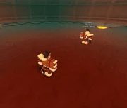
Afinidades Desbloqueáveis:
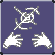
Shadowcast (SDW)
Shadowcast é uma sintonização que o jogador deve desbloquear e com a qual não pode começar.
É único porque drena o éter daqueles que são atingidos por seus Mantras e devolve o éter drenado ao usuário.
Isso tem um custo na produção de danos, que tende a ser um pouco menor. Shadowcast aplica um efeito de partículas pretas ao acertar que pode ser acumulado.
Muitos Talentos Shadowcast estão centrados na drenagem de éter, obscurecimento da visão e AoE.
Shadowcast pode ser treinado com uma combinação dos Pure Heart e Shadowcast Mantras, ou comendo Umbral Obsidian.
A sintonização pode ser desbloqueada usando uma poção Nightblood obtida na Primeira Camada dentro da Cidade dos Afogados, nas profundezas, usando 5 (2 se obtidas anteriormente) Obsidiana Umbral, e pode aprimorar feitiços por 100 Notas cada.
Shadowcast é desbloqueado permanentemente como outros elementos e pode ser iniciado após ser desbloqueado. Cada atualização adquirida tornará a próxima atualização para as mesmas notas do Mantra 100 notas mais cara.Shadowcast pode ser treinado com uma combinação dos Pure Heart e Shadowcast Mantras, ou comendo Umbral Obsidian.
A sintonização pode ser desbloqueada usando uma poção Nightblood obtida na Primeira Camada dentro da Cidade dos Afogados, usando 5 (2 se obtidas anteriormente) Obsidiana Umbral, e pode atualizar feitiços por 100 Notas cada.
Shadowcast é desbloqueado permanentemente como outros elementos e pode ser iniciado após ser desbloqueado. Cada atualização adquirida tornará a próxima atualização para as mesmas notas do Mantra 100 mais cara.
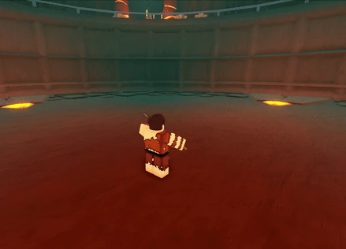
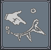
Ironsing (MTL)
Ironsing é uma sintonização baseada na habilidade de utilizar e manipular metal, comumente usada por ferreiros em torno dos Luminants. Aplica hastes de metal nos inimigos, permitindo uma variedade de interações dependendo dos talentos escolhidos.
Ironsing pode ser treinado com uma combinação do treinamento com Ferrofluid e usando mantras de Ironsing.
O treinador pode ser encontrado dentro de uma torre no lado esquerdo do final da ponte em Miner's Landing, no caminho para Starfield Veldt. Esta ponte sempre gera dois inimigos. Para desbloquear Ironsing, você deve primeiro ter uma Liga Pluripotente. Então fale com o ferreiro em Miner's Landing. Ele dirá que um amigo dele está procurando uma Liga Pluripotente. Se você já obteve Ironsing antes, não é necessário obter uma Liga Pluripotente e falar com o ferreiro. Vá até o treinador e ele lhe dirá que está procurando 6 minérios.
Os minérios que você precisa são:
- Ferro
- Ouro
- Erisore
- Iritina
- Astrulina
- Umbrite
Depois de dar a ele esses minérios, ele lhe dará um Alloyed Elixir. Beba o Elixir e você desbloqueará Ironsing.
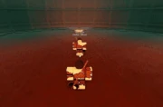
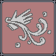
Bloodrend (BLD)
Bloodrend é uma sintonização que concede ao usuário a habilidade de controlar, manipular e conjurar seu próprio sangue.
Bloodrenders se destacam em lutas longas, seu poder aumentando à medida que a luta avança devido aos efeitos aplicados aos inimigos de Blood Poison e Blood Drain. Eles podem contrariar a sustentação de seus oponentes enquanto usam a sustentação para se beneficiarem. No entanto, Bloodrend é difícil de usar fora do combate com um único alvo, pois o veneno do sangue se decompõe, tornando difícil atingir altas porcentagens dele contra vários inimigos.
A Treinadora de Sintonia, Vyrelda, pode estar localizada em um iglu no lado leste de Firfire Village, cuidando de um mergulhador ferido. Ela só fica visível depois de ter matado Chaser pelo menos uma vez. Depois de matar Chaser, entre novamente na Camada 2 e vá falar com Vyrelda - ela falará sobre sua deserção do Ministério e como ela evitou os capangas do Ministério por tanto tempo, o que está doendo para ela. Ela menciona "Bloodrend" e como ela só desejava ser ensinada sob o Segundo apenas pela sintonização - sem laços, sem relacionamentos...
Após a história de Vyrelda, o jogador será solicitado a solicitar Bloodrend. Vyrelda concorda em ensinar este último sob a condição de que o jogador lide com alguns Bloodrenders do Ministério para ganhar 3 Estrelas do Coração de seu saque.
Saia do prédio e corra pela vila por um tempo. Os controladores de sangue perceberão você como uma ameaça e começarão a te atacar. Mate todos os três cultistas por 3 Estrelas do Coração e volte para Vyrelda para pegar a poção Curseblood. Após o uso, seu corpo dói por uma fração de segundo. Você ganhou acesso a Bloodrend.
*Você não precisa matar novamente o Chaser para manter a afinidade, você pode mantê-lo usando o ganho de luz para sair da camada 2 das Profundezas.
Depois de desbloquear Bloodrend pelo menos uma vez, Vyrelda estará disponível em The Derelict Highchurch, onde ela solicitará 2 estrelas do coração para a sintonização (você pode obtê-las facilmente através dos agentes do ministério que aparecem do lado de fora da igreja depois de falar com ela). também estará disponível na tela de criação de personagem. Ela pode treinar seus mantras em troca de Notas.
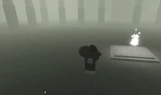